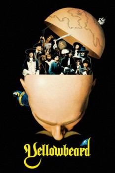

Country:United Kingdom, 96 minutes
Spoken languages:English, French, Italian, Spanish
Genres:Comedy, Adventure
Director(s):Mel Damski
Writer(s):Peter Cook, Bernard McKenna, Graham Chapman
Video Codec:Unknown
Number: 1499

Certification:PG
Storyline:
For years Yellowbeard had looted the Spanish Main, making men eat their lips and swallow their hearts. Caught and convicted for tax evasion, he's sentenced to 20 years in St. Victim's Prison for the Extremely Naughty. In a scheme to confiscate his fabulous treasure, the Royal Navy allows him to escape and follows him, where saucy tarts, lisping demigods and some awful puns and punishments await.
Cast:
Graham Chapman (as Captain Yellowbeard), Martin Hewitt (as Dan), Eric Idle (as Commander Clement), Peter Cook (as Lord Percy Lambourn), Michael Hordern (as Dr. Gilpin)
Medium: Media file,
Location: D:\Cheech and Chong\[1983] Yellowbeard.mp4
Loaned: No
Aspect ratio: Unknown